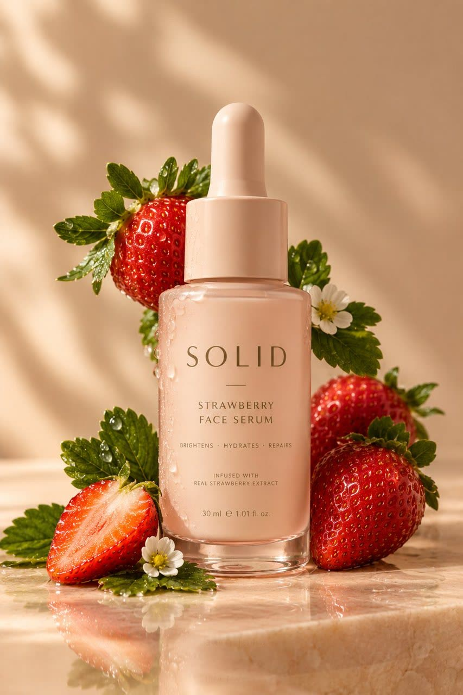

Strawberry serum luxury skincare ad
PRP-022Prop stylingunspecifiedby prompttolife (@prompt2llife)2026-09-17

High-end beauty ad: strawberry-infused face serum bottle with fresh berries and soft glow.
Prompt
Create an ultra-realistic, high-end beauty advertisement for SOLID, featuring its premium strawberry-infused face serum. A single elegant nude-colored serum bottle stands upright as the main focus on a luxurious nude-beige surface. The bottle has a sophisticated minimalist design, soft matte nude finish, realistic premium glass, subtle reflections, and the brand name “SOLID” clearly printed on the front in refined minimalist typography. Fresh, realistic strawberries are artistically incorporated around and partially attached to the bottle, with a few delicate strawberry leaves and a small strawberry resting naturally against the bottle. The strawberries should look fresh, juicy, vibrant, and highly detailed, creating a beautiful visual connection to the strawberry-infused serum without overpowering the product. Use a sophisticated nude, cream, beige, and soft strawberry-red color palette. Soft diffused studio lighting creates elegant highlights, realistic shadows, subtle reflections, and a gentle luxurious glow. The composition should look like a high-budget international skincare commercial — sophisticated, clean, sensual, premium, and aesthetically pleasing. Professional luxury product photography, cinematic composition, realistic materials, shallow depth of field, natural textures, physically accurate lighting, ultra-sharp product details, photorealistic strawberries, realistic glass and liquid, 8K commercial photography. The serum bottle must remain the clear hero of the image. No people, hands, text other than the SOLID branding, or unnecessary objects.
Tags: skincare, fruit props, beauty